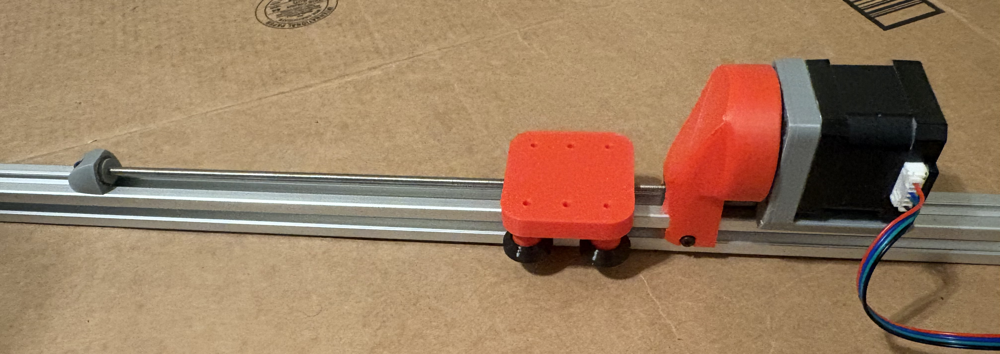

Cycloidal Gearbox


Nested two-stage cycloidal gearbox, using a cycloidal ball reducer as the first stage and a standard cycloidal drive as the second stage. Designed to minimize gearbox thickness by nesting the stages. In the proof-of-concept (first video) each stage provides a 10:1 reduction, compounding to 100:1. Currently work is being done to design a manufacturable metal version with a much smaller footprint. This involves rework of essentially every component along with tolerance calculation & analysis.


Cycloid analysis toolset — This project also involves a set of MATLAB and Excel tools written to support the design. Profile generation scripts take dimensional specs and produce parametric equations of the cycloid geometry along with a visualization. Tolerance analysis is run with a Monte Carlo simulation in MATLAB and cross-checked against an independent Excel model, the Excel model will hopefully be depreciated once both models are proven consistent across a variety of input.
Vision Model


A segmentation system for identifying trails in natural environments, built with my own datasets, collectively over 450 images. The architecture uses a lightweight classifier model to select between more specialized segmentation models trained on different trail types, currently two models covering forest and dirt trails exist. This was intended to better handle variation across different environments and allow for lighter models.
Intended for deployment on a Raspberry Pi 5 with an accelerator shield, interfacing with a PX4 flight controller. A test bench drone was constructed along with a basic flight controller program, a run of the laptop side of this program is shown in the above video. Camera data was sent to my laptop via Wi-Fi where the model was run to avoid purchase of a onboard computer. Currently on hold due to component costs.
Linear Actuator

Designed for a friend's planned Open Sauce project, intended to be rail mountable and easy and cheap to manufacture. Currently built around a NEMA 17 stepper, initial concept used a brushed DC motor with limit switches. Mounts to aluminum extrusions for modularity, designed for a minimum of 7" of travel. This variation is geared to increase actuator speed at the cost of some torque.
Control System
The arm itself is built on the open-source Kadua arm design, driven by stepper motors with planetary gearboxes and controlled via a Raspberry Pi and Arduino. Modifications were made to prevent the occasional gearbox slipping under loads.
The ROS2 control system is my own, allowing control of the arm via end effector location targets. These targets can be input via coordinates or mouse input in a 3D simulation (RViz). Once a target is given, an inverse kinematic solver produces joint angles which are sent to the arm hardware. The ROS2 system runs on my laptop, which communicates with the arm via a socket connection to an onboard Raspberry Pi.
Drawing Machine
A pen plotter built using a five-bar linkage. Source photos are reduced to a series of splines via Canny edge detection, and the resulting paths are converted to joint angles through an inverse kinematic solver.